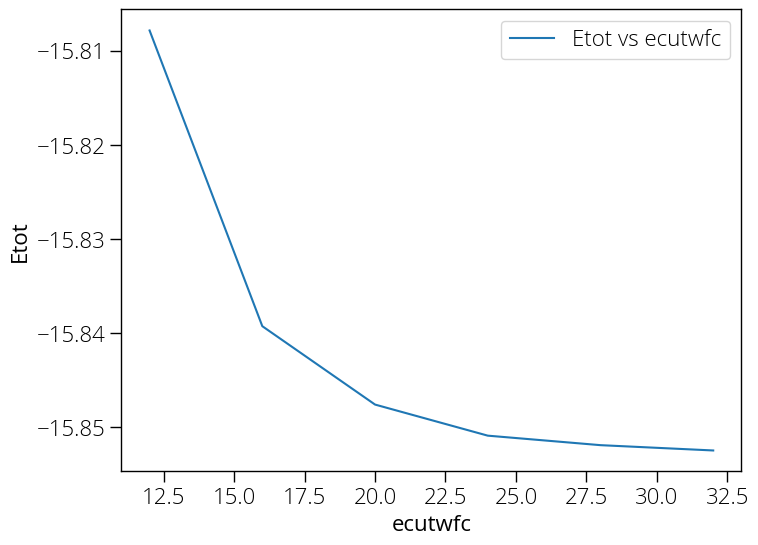

Convergence test using pwtk
We can automate the previous self consistent calculation by varying a certain parameter. Say we want to check the total energy of the system for various values of ecutwfc. We can do that by using pwtk script.
# load the pw.x input from file
load_fromPWI si.scf.in
# open a file for writing resulting total energies
set fid [open Etot-vs-ecutwfc.dat w]
# loop over different "ecut" values
foreach ecut { 12 16 20 24 28 32 } {
# name of I/O files: $name.in & $name.out
set name si.scf.ecutwfc-$ecut
# set the pw.x "ecutwfc" variable
SYSTEM "ecutwfc = $ecut"
# run the pw.x calculation
runPW $name.in
# extract the "total energy" and write it to file
set Etot [::pwtk::pwo::totene $name.out]
puts $fid "$ecut $Etot"
}
close $fid
To run the above script:
pwtk ecutwfc.pwtk
Now we can plot the total energy with respect to ecutwfc. The data is in Etot-vs-ecutwfc.dat

Convergence test using UNIX shell script
- We can do the convergence test with various parameters. We can calculate the total energy of the system by varying various parameters. We will use the shell script to automate the process with different cutoff energy values.
./si.script.sh
#!/bin/sh
NAME="ecut"
for CUTOFF in 10 15 20 25 30 35 40
do
cat > ${NAME}_${CUTOFF}.in << EOF
&control
calculation = 'scf',
prefix = 'silicon'
outdir = './tmp/'
pseudo_dir = '/Users/Pranab/Dropbox/Shared/NUS_PC/DFT/Projects/Si/'
/
&system
ibrav = 2,
celldm(1) = 10.0,
nat = 2,
ntyp = 1,
ecutwfc = $CUTOFF
/
&electrons
mixing_beta = 0.6
/
ATOMIC_SPECIES
Si 28.086 Si.pz-vbc.UPF
ATOMIC_POSITIONS (alat)
Si 0.0 0.0 0.0
Si 0.25 0.25 0.25
K_POINTS (automatic)
6 6 6 1 1 1
EOF
~/qe/qe-6.5/bin/pw.x < ${NAME}_${CUTOFF}.in > ${NAME}_${CUTOFF}.out
echo ${NAME}_${CUTOFF}
grep ! ${NAME}_${CUTOFF}.out
done
- We can plot the energy vs cut off energy, and choose a reasonable value.
Note: I had initially problem is running the script in macOS. The problem was the script file format was set to DOS. The file format of a script (.sh) file could be checked in the following way:
Open the file in vi editor. vi si.script.sh Now in vi editor command mode (ESC key), type :set ff? This would tell you the file format. Now to change file format, use the command :set fileformat=unix